參考資訊：
https://www.stepfpga.com/doc/step-max10
library ieee;
use ieee.std_logic_1164.all;
entity main is
port(
clk : in std_logic;
led : out std_logic_vector(0 to 7) := "11111111"
);
end main;
architecture logic of main is
signal val: std_logic_vector(0 to 7) := "11111111";
signal clk_cnt : integer := 0;
begin
process(clk) is
begin
if (clk'event and clk = '1') then
clk_cnt <= clk_cnt + 1;
if (clk_cnt = 12000000) then
clk_cnt <= 0;
led <= val;
val <= not val;
end if;
end if;
end process;
end logic;
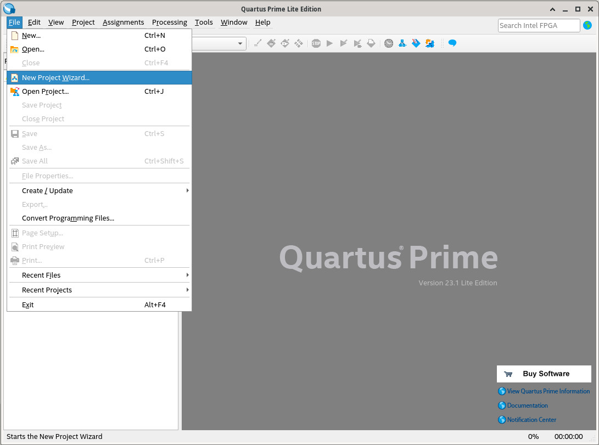
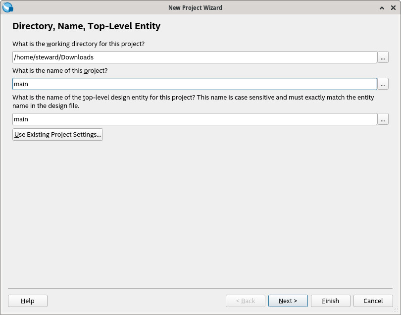
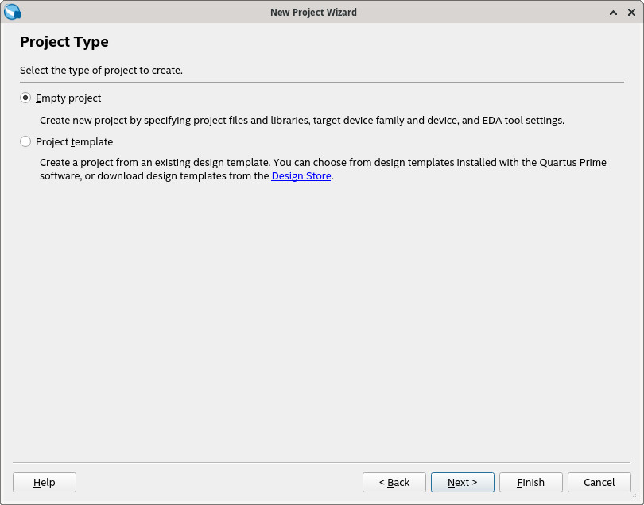
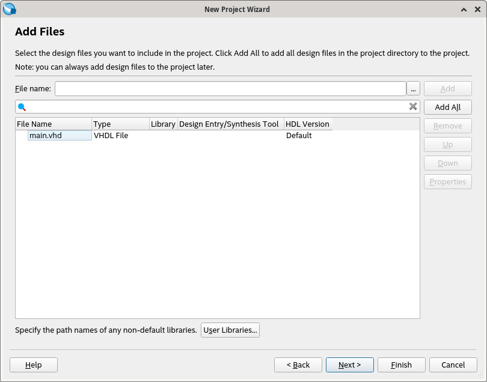
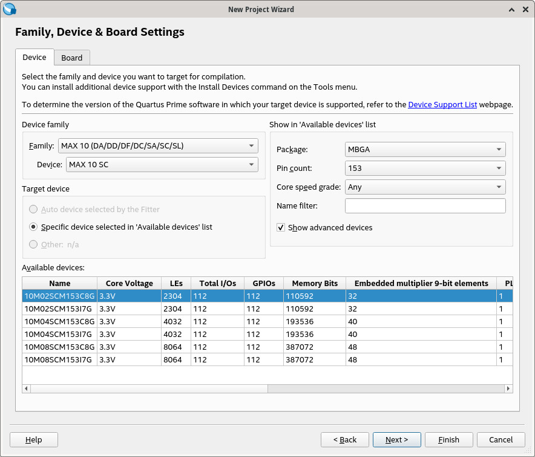
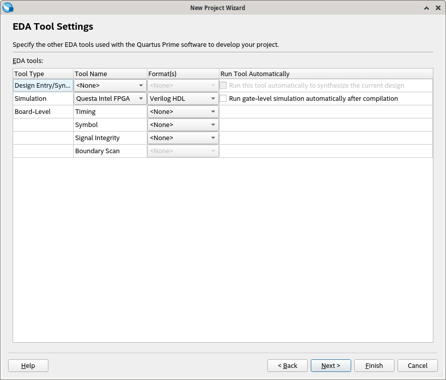
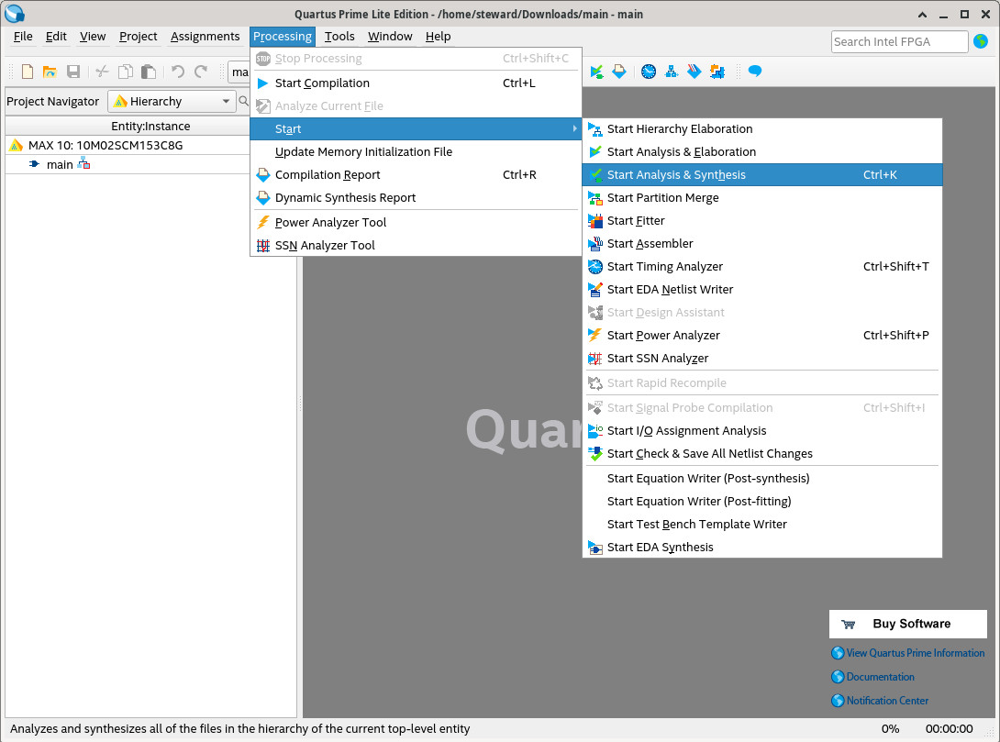
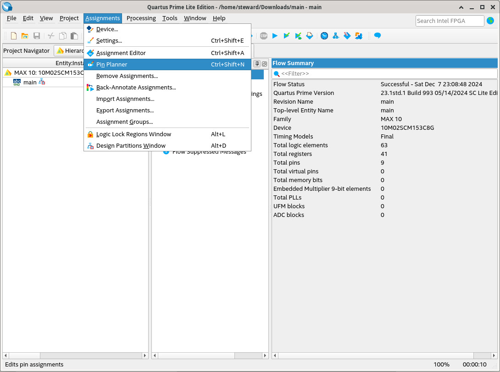
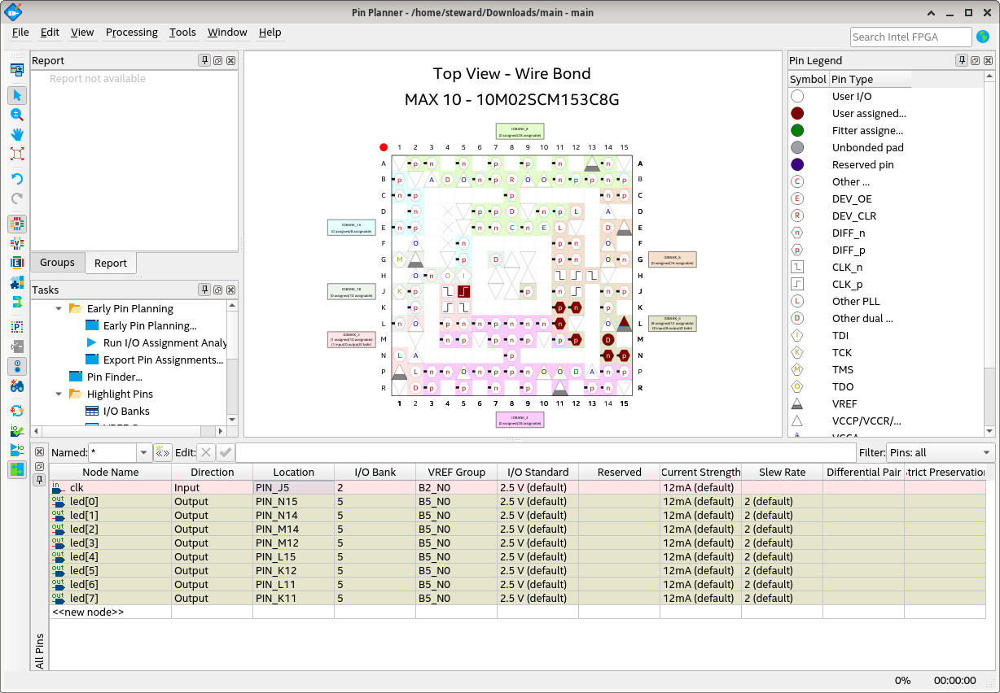
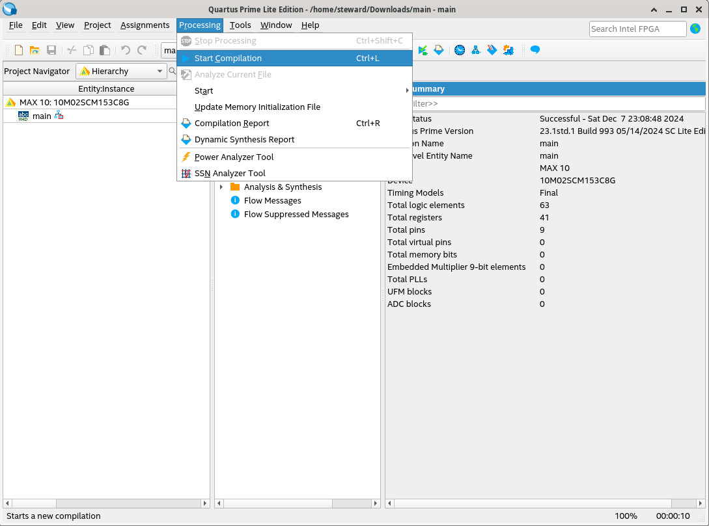
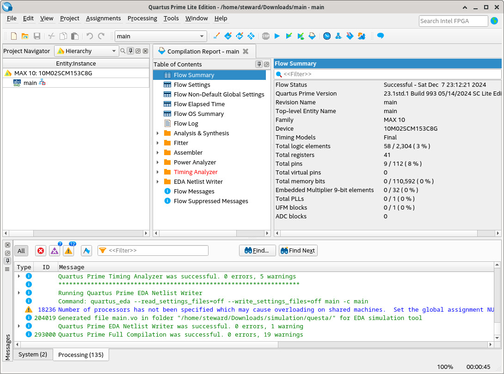
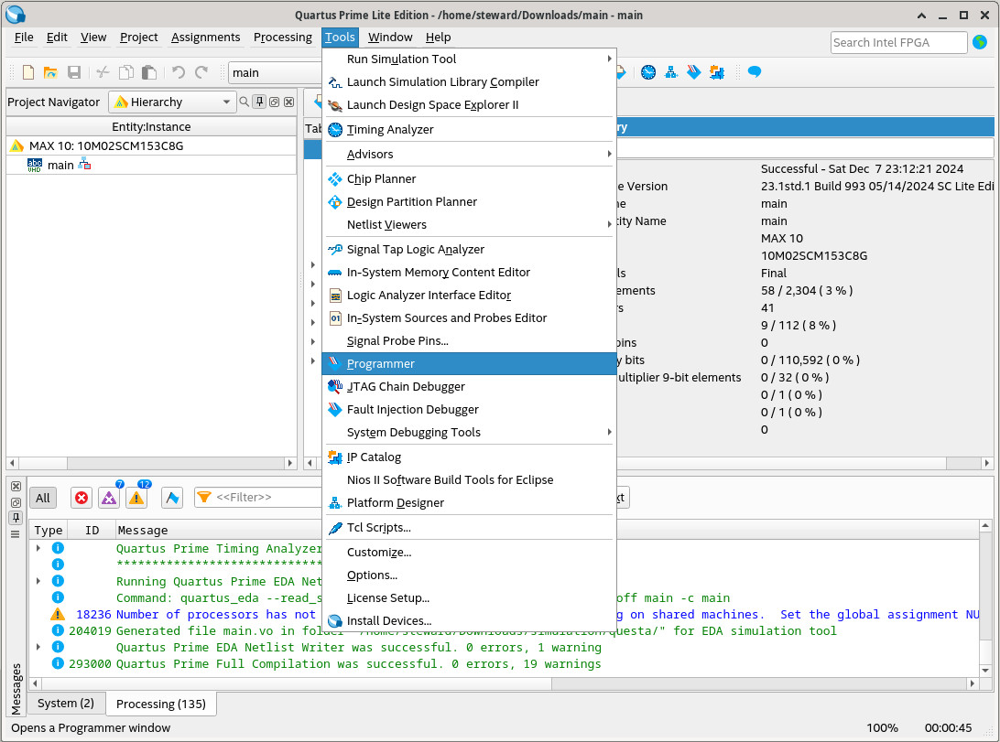
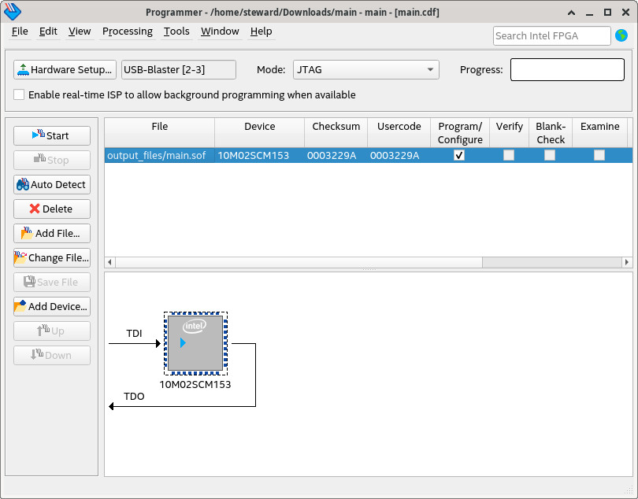
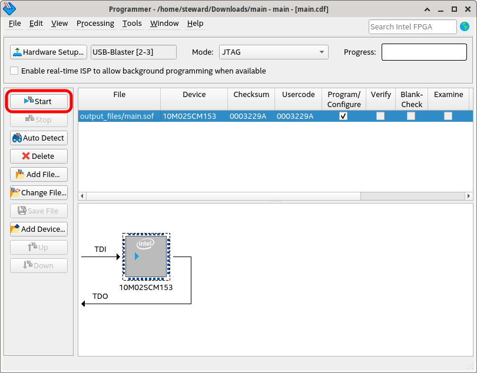
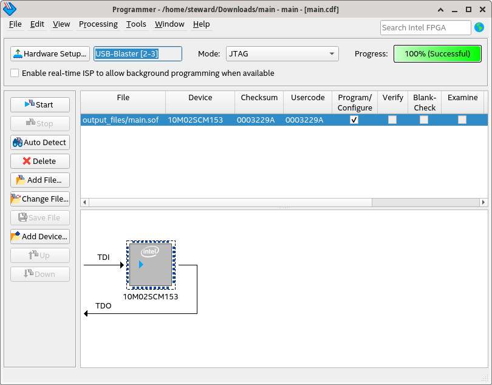
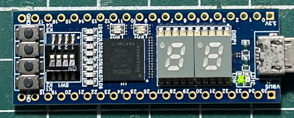
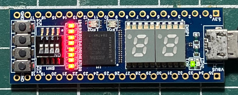